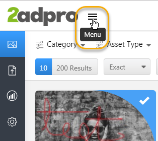
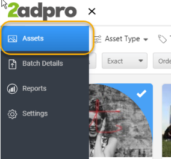
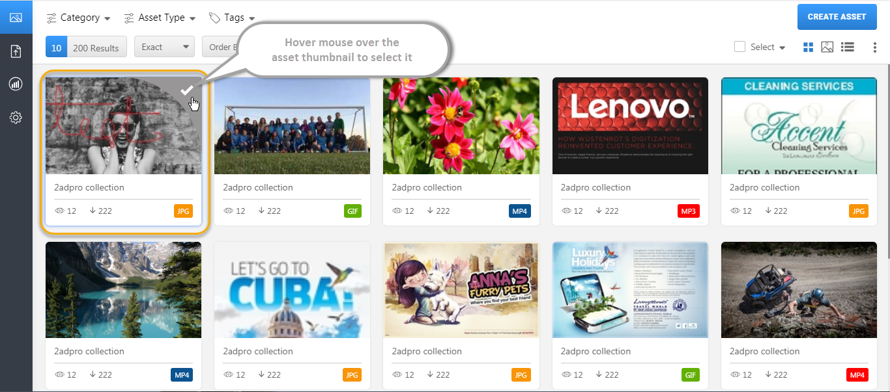
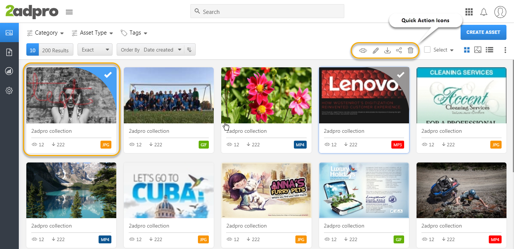
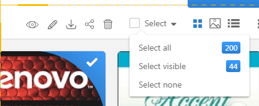
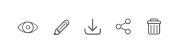

Selecting Assets for Quick Action
Easily select and group media files of different sizes in type and category. To select the asset, hover over an asset preview and left-click the tick. Once you have made a selection there are several actions available on the Quick Action Tool bar.
Note: All the assets added must be pre-set as Single select or Multiselects
To navigate and select assets:
- Click the ‘Menu Icon’ and select ‘Assets’ from the side bar
 
The assets display
- Roll/Hover over the asset to select it


You can select multiple assets individually or select assets using the ‘Select’ dropdown

- Click the ‘Select’ dropdown
- Click ‘Select All’ to select all the assets or Click the ‘Select Visible’ to select the visible assets
- Click ‘Select None’ to deselect the selected assets
- Select the action icon from the list

- Click to Quick view asset details
- Click
 to Quick edit the asset details
to Quick edit the asset details - Click to download the files
- Click to share the assets
- Click to delete the assets